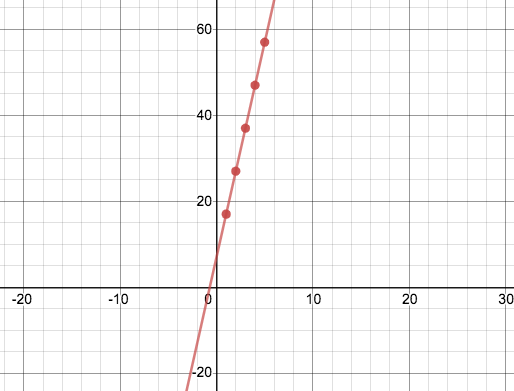

A relationship between two variables is linear if one changes at a constant rate relative to the other. Here are a few examples of linear relationships:
-
A car driving at 40mph will travel exactly 40 miles for each additional hour
-
A lemonade stand that sells cups of lemonade for $0.75/ea will charge exactly $0.75 for each additional glass
We can see linear relationships show up in Tables, Graphs, and Function Definitions:
|
 |
fx = 10x + 7
|
{kind=link}
In Graphs, linear relationships appear as points that form a straight line. These lines have a slope ("rise over run") and a y-intercept (where the line crosses the y-axis, at x=0).
In Tables, linear relationships show up as y-values that change by a constant rate relative to their x-values.
We can define linear relationships using Function Definitions (either in function notation or Pyret code). Linear functions always include a term for the slope and another for the y-intercept.
If you know how to read the slope and y-intercept for Tables, Graphs and Definitions, you can switch back and forth between each representation. This flexibility is good: sometimes it’s just easier to look at a table or a graph, or see the definition!
These materials were developed partly through support of the National Science Foundation,
(awards 1042210, 1535276, 1648684, and 1738598).  Bootstrap by the Bootstrap Community is licensed under a Creative Commons 4.0 Unported License. This license does not grant permission to run training or professional development. Offering training or professional development with materials substantially derived from Bootstrap must be approved in writing by a Bootstrap Director. Permissions beyond the scope of this license, such as to run training, may be available by contacting contact@BootstrapWorld.org.
Bootstrap by the Bootstrap Community is licensed under a Creative Commons 4.0 Unported License. This license does not grant permission to run training or professional development. Offering training or professional development with materials substantially derived from Bootstrap must be approved in writing by a Bootstrap Director. Permissions beyond the scope of this license, such as to run training, may be available by contacting contact@BootstrapWorld.org.